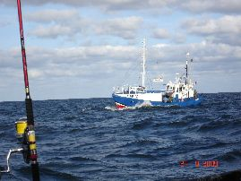

|
 |
 |
 |
 |
|
Wêdkarstwo G³ówn¹ atrakcj¹ 'wêdkarsk¹' okolicy jest jezioro Jamno. Jest to jedno z wiêkszych jezior w Polsce co do powierzchni
znajduje siê w pierwszej 10. Powierzchnia jeziora wynosi 2240 ha, d³ugoœæ 10 km, szerokoœæ 3,4 km, g³êbokoœæ do 4 m , œrednia g³êbokoœæ akwenu wynosi 1,5m.
Linia brzegowa jest s³abo rozwiniêta, brzegi s¹ niskie i doœæ mocno poroœniête roœlinnoœci¹.
Jest to jezioro sandaczowo-leszczowe. Mo¿na tu z³owiæ du¿ego wêgorza, szczupaka, okonia i sandacza, a tak¿e wiele gatunków ryb spokojnego ¿eru.
Wêdkowanie z brzegu jeziora w wielu miejscach jest utrudnione. Dlatego najlepszym wyjœciem z sytuacji jest wynajêcie ³ódki.
Nie polecam po³owów metod¹ gruntow¹ z uwagi na doœæ du¿e osady mu³u na dnie.
Dobrym rozwi¹zaniem s¹ wszelkiego rodzaju metody sp³awikowe.
Do po³owów polecam ujœcie jeziora do morza, niestety doœæ zat³oczone przez wêdkarzy. W bardzo bliskiej okolicy znajduj¹ siê prywatne stawy specjalnie zarybiane z przeznaczeniem dla turystów wêdkarzy.
Po wykupieniu zezwolenia w kapitanacie w Ko³obrzegu, mo¿emy wêdkowaæ z pla¿y ( Surfcasting ). Najpopularniejsze miejsce do wêdkowania to pla¿a po obu stronach kana³u ³acz¹cego Jamno z morzem. Generalna zasada wêdkowania z pla¿y to im dalej tym lepiej.
Zestaw do wêdkowania z pla¿y powinien ska³adaæ siê z doœæ sztywnej, mocnej wêdki o d³. 4-5m oraz cw 150-250 gr. Ko³owrotek mo¿e byæ taki jak do po³owów gruntowych, mocny na który mo¿emy nawin¹æ ok. 200m ¿y³ki 0.30-0.35 lub plecionki. Do ¿y³ki g³ównej mocujemy przypon strza³owy (gruboœci ok. 0.40-0.50) na koñcu którego jest zaczepiony ciê¿arek (150-200gr), mo¿na (niewielu tak robi) doczepiæ do ciê¿arka koszyczek zanêtowy wype³niony wnêtrznoœciami ryby lub g¹bk¹ nas¹czon¹ rybi¹ krwi¹. Na lub za przyponem strza³owym mocujemy troki boczne z haczykami. Przynêta to czerwone robaki, filety ze œledzia, tobiasze itp.
 Wêdkarstwo z kutra to jest zupe³nie inna bajka, jest to du¿y wysi³ek fizyczny daj¹cy du¿o relaksu oraz satysfakcji. Wyp³ywamy rano ok. 6:00 rejs trwa od 6 do 12 godzin (przeciêtnie 10 godzin), zale¿y to od p³yn¹cych wêdkarzy. W trakcie rejsu mo¿emy liczyæ na ciep³¹ zupê rybn¹ z dorsza, w¹tróbki dorszowe, tatar z dorsza ciep³e oraz zimne napoje ;) ( menu zale¿y od kutra). Cena za ca³y rejs to 140-160z³, oczywiœcie na innych kutrach mo¿e byæ dro¿ej lub taniej. Na ³owisko p³yniemy ok 1 godzinê. Gdy szyper ustawi kuter nad ³awic¹ œledzi (dorsze s¹ pod nimi) lub innym obiecuj¹cym miejscu daje jeden sygna³ dzwiêkowy, który rozpoczyna wêdkowanie. Zestaw w zale¿noœci od dryfu kutra rzucamy przy samej burcie lub dalej od niej. Pilker musi opaœæ na dno (g³êbokoœæ wêdkowania to 30-50m). Nastêpnie podrywamy pilker z dna i opuszczamy go z powrotem (pompujemy), z grubsza tak wygl¹da ³owienie. Mo¿na prowadziæ pilker pod k¹tem, na dwa poderwania, powoli, szybko, podrywaæ wysoko ponad dno, pukaæ o dno - technik jest du¿o wszystkie mog¹ byæ skuteczne. Pobicia s¹ zdecydowane i mocne. Dorsz stawia znaczny opór, nale¿y uwa¿aæ ¿eby nie uszkodziæ ko³owrotek. Przy holu pracujemy kijem, pompujemy, nadmiar plecionki/¿y³ki nawijamy na ko³owrotek. Dwa sygna³y dzwiêkowe zmiana ³owiska, zwijamy zestaw i p³yniemy dalej. W trakcie tzw. przelotu poprawiamy sprzêt zmieniamy pilkery, przywieszki, posilamy siê, snujemu wêdkarskie opowieœæi :). Praca kijem to ok.40%-50% czasu rejsu, pozosta³y czas to dop³yniêcie z portu do pierwszego ³owiska, zmiana ³owisk oraz powrót do portu. Trzy sygna³y dzwiêkowe koniec wêdkowania, powrót do portu.

£owimy dorsze i coœ ??? :))) Sprzêt mo¿na wypo¿yczyæ na kutrze (ok. 25z³ na ca³y rejs). Zestaw do mocny kij dorszowy d³. 2,1 m do 2,7m (d³u¿szym niewygodnie operuje siê na kutrze) cw. 150-200 gr, mocny ko³owrotek mog¹cy pomieœciæ 150-200m plecionki lub ¿y³ki. Lepsza jest plecionka ze wzglêdu na brak rozci¹gliwoœci, lepiej wyczuwa siê dno i pobicia dorsza. Do plecionki do³¹czamy przypon (0.40-0.50) do którego przyczepiamy troki boczne z przywieszkami oraz pilker.
Przy rzucaniu pilkerem nale¿y uwa¿aæ na innych wêdkarzy, w trakcie zmiany ³owiska nale¿y pilker dobrze zaczepiæ o przelotkê lub kab³¹k ko³owrotka, ¿eby bujaj¹cy siê pilker nie zrobi³ komuœ krzywdy.
:))) Dla ka¿dego wêdkarza i nie tylko, wyprawa na dorsze powinna staæ siê obowi¹zkowym punktem urlopu nad Ba³tykiem. ¯eby siê nie zniechêciæ proponujê pierwszy raz wybraæ siê na dorsze w bezwietrzny dzieñ, aby unikn¹æ ewentualnych dolegliwoœci zwi¹zanych z chorob¹ morsk¹. PóŸniej jak ju¿ z³apiemy bakcyla wiêksze fale bêd¹ tylko dodatkow¹ atrakcj¹.
ps. Przed wypraw¹ proszê unikaæ filmów typu "Gniew oceanu" ;) |
| |